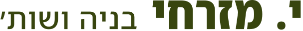
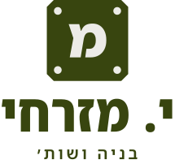
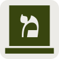
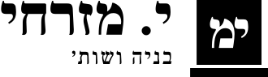
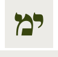

ספר המותג
י. מזרחי בניה ושות׳: הלוגו, הצבעים, הגופן, ואיך הם נראים בעולם. מסמך עבודה פנימי (לא מאונדקס).
הרעיון
בכל אתר בנייה בישראל תלוי שלט, ועליו שם הקבלן שאחראי לביצוע. המותג בנוי סביב הרגע הזה: השם על השלט.
מבוגרים וצעירים בענף מתחרים על "איכות" ו"חדשנות". מה שיש לחברה עם 60 שנות פעילות ואין לחברה חדשה הוא שם שעמד מאחורי עבודה לאורך זמן. לכן השפה החזותית שקטה ויציבה: אות אחת בנויה כמו חתך של מבנה, צבע אחד, גופן אחד, ותמונות של אתרי בנייה אמיתיים מאז ועד היום.
שלושה כיוונים ללוגו
א׳ · מונוגרמה הנדסית (נבחר)
האות מ׳ בנויה כחתך של מבנה: רצפת יסוד, קיר נושא ותקרה. בכתב העברי הקו העליון של המ׳ נכתב כמו יו״ד, וכאן הוא עולה מעל קו התקרה: הי׳ של "י. מזרחי" היא החלק שבונה את המ׳.
ב׳ · סמל אדריכלי מופשט
קיר נושא על רגל יסוד, בחתך. נכון הנדסית, אבל נקרא כמו סימן מתמטי (⊥) או אייקון של כל חברת בנייה. אין בו את השם.

ג׳ · לוגוטייפ בלבד
השם עצמו, צר וכבד. בוגר וקריא, אבל אין לו צורה שאפשר לשים על קסדה, על פביקון או בפינת שלט.
| קריטריון | א׳ מונוגרמה | ב׳ סמל מופשט | ג׳ לוגוטייפ |
|---|---|---|---|
| קשור לשם החברה | כן: מ׳ ובתוכה י׳ | לא | כן |
| קריא ב-16 פיקסלים | כן (צורה אחת, בלי קווים דקים) | כן | לא: השם נשבר |
| מובחן ממתחרים | גבוה | נמוך: נראה כמו אייקון גנרי | בינוני |
| עובד בשחור-לבן וחד-צבעי | כן | כן | כן |
| סיכון | מי שלא קורא עברית רואה צורה הנדסית, וזה בסדר | בלבול עם סימנים מתמטיים | תלוי באורך השם; קשה לשלט קטן |
ההחלטה: א׳ כסמל, יחד עם השם בגופן המותג (כמו בכיוון ג׳) לגרסה האופקית. הסמל לבדו משמש לפביקון, לקסדות, לחותמת ולפינת השלט.
הלוגו וגרסאותיו
אופקי, על רקע בהיר
הגרסה הראשית: אתר, מסמכים, חתימת אימייל.
אופקי, על רקע כהה
שלטים, כרטיס ביקור (צד קדמי), רכבים.

קומפקטי
למקומות ריבועיים: פרופיל ברשתות, חותמת, פינת שלט.


הסמל והפביקון
נבדק ב-120, 48, 32 ו-16 פיקסלים.
לבן על שחור

שחור על לבן
פקס, חותמת גומי, הדפסה בשחור-לבן.
כללי שימוש
- מרווח נקי סביב הלוגו: לפחות עובי קו אחד של הסמל (הקיר של המ׳) מכל צד.
- גודל מינימלי: הסמל 16 פיקסלים / 5 מ״מ. האופקי: 120 פיקסלים / 30 מ״מ רוחב.
- בלי צל, מתאר, הטיה, מתיחה או שינוי צבע מחוץ לפלטה. בלי מסגרת סביב הסמל.
- השם בלוגו הומר לקווי מתאר, כך שאין צורך בגופן מותקן כדי לפתוח את הקבצים.

צבעים
אחד לרקע, אחד לדיו, והדיו הוא גם צבע הפעולה. ירוק זית: עץ הזית חי יותר מהאנשים ששותלים אותו. המתחרים בענף תפסו אדום וכחול כהה.
טקסט, כפתורים, שטחי צבע
רקע הדף
משטח, צעד אחד כהה יותר
טקסט משני
ניגודיות (חישוב WCAG 2.1): זית על גבס 8.69:1 · זית על בטון 7.78:1 · זית רך על גבס 6.22:1 · זית רך על בטון 5.57:1. כולם עוברים AA, גם לטקסט קטן.
גופן
משפחה אחת: Noto Sans Hebrew (Google, רישיון SIL OFL 1.1, מותר גם בלוגו ובדפוס). לכותרות היא נלחצת לרוחב 68% ומשקל 800, כמו האותיות על שלטי אתרים ותמרורים; לטקסט היא ברוחב מלא ומשקל 400.
בונים לעשרות שנים
טקסט מוביל, 26 פיקסלים: בית או בניין עומדים עשרות שנים אחרי שהקבלן עזב את האתר.
טקסט רץ, 19 פיקסלים, גובה שורה 1.55: לכן אנחנו עובדים לפי מפרט כתוב, מתעדים כל שלב, ומדברים על הפרטים האלה כבר בפגישה הראשונה.
קטן, 15 פיקסלים: כיתובי תמונות, הערות.
בעולם
כותרת האתר
כרטיס ביקור (90×50 מ״מ)

י. מזרחי בניה ושות׳[כתובת המשרד] · קבלן רשום מס׳ [מספר]
השדות בסוגריים הם תבנית: ממלאים רק בפרטים שאושרו.
חתימת מסמך ונייר מכתבים
הנדון: הצעת מחיר לבניית [סוג המבנה] ב[יישוב]
[גוף המכתב]
[שם ומשפחה]
[תפקיד]
[טלפון] · [אתר]
שלט אתר בנייה
| קבלן ראשי | י. מזרחי בניה ושות׳ · רישום מס׳ [מספר] |
|---|---|
| יזם / מזמין | [שם] |
| אדריכל | [שם] |
| מהנדס ביצוע / מנהל עבודה | [שם וטלפון] |
| היתר בנייה | [מספר ותאריך] |
תוכן השלט נקבע בחוק ובתנאי ההיתר. הפריסה כאן היא עיצוב בלבד; לפני ייצור לבדוק מול דרישות הרשות המקומית ותקנות הבטיחות.
קבצים
כל הקבצים ב-assets/brand/. SVG לכל שימוש דיגיטלי ולבית הדפוס (וקטורי, ניתן לעריכה ב-Illustrator, Figma, Inkscape ו-Canva); PNG ב-assets/brand/png/.
המקור: tools/brand.py מייצר את כל הגרסאות מאותה גאומטריה. שינוי בעובי הקו או בצבע נעשה שם, פעם אחת.